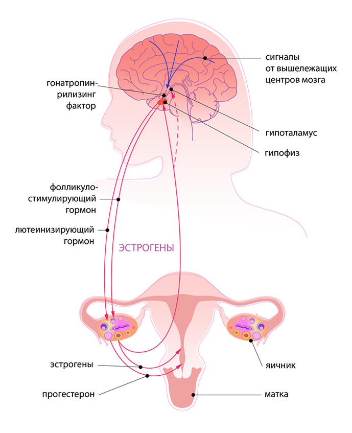

1
Шаг 1. Тепло.
Грелка или бутылка с тёплой водой на низ живота снимает спазм гладкой мускулатуры матки.
Лид-магнит
Нарушения цикла сегодня встречаются гораздо чаще, чем несколько десятилетий назад. Это не преувеличение и не паника ради паники — это медицинская статистика.
Большинство нарушений менструального цикла связано с болезненными месячными. У части женщин боль настолько сильная, что временно теряется трудоспособность. Предменструальный синдром в той или иной форме знаком каждой четвёртой-пятой женщине, а у некоторых он проходит в тяжёлой форме.
Чаще всего женщины впервые обращаются к врачу с проблемами цикла именно тогда, когда уверены: рано ещё о чём-то беспокоиться.
Самое частое заблуждение — думать, что нерегулярный или болезненный цикл — просто «особенность организма». На деле это не диагноз, а сигнал. Тело сообщает о дисбалансе, который стоит услышать, а не заглушить обезболивающим.
Ваш цикл — не изолированный «женский вопрос». Это ежемесячный отчёт о состоянии всей гормональной системы: щитовидной железы, надпочечников, нервной системы, обмена веществ.
Игнорировать сбой цикла — то же самое, что игнорировать мигающую лампочку на панели приборов в машине. Она мигает не просто так.
От состояния цикла зависит:
Забота о цикле — не про «женское здоровье» в узком смысле. Это про то, сколько лет ваше тело будет работать на вас, а не против вас.

Самый простой и при этом самый недооценённый инструмент — обычный календарь цикла. Вот что стоит фиксировать:
Грелка или бутылка с тёплой водой на низ живота снимает спазм гладкой мускулатуры матки.
Важное противопоказание: если у вас есть любые новообразования, даже доброкачественные, эндометриоз или выраженная эрозия шейки матки — низ живота греть нельзя. Тепло может стимулировать нежелательный рост тканей. Проконсультируйтесь с гинекологом перед использованием тепловых методов.
Тёплый настой с согревающими и расслабляющими травами снимает спазм мягче, чем таблетка.
Лёгкая растяжка или медленная прогулка улучшают кровообращение в области таза.
Именно в болезненный цикл — самое важное время начать вести записи.
Разовые меры облегчают конкретный цикл. Но если боль повторяется месяц за месяцем — телу нужна системная поддержка.
За несколько дней до менструации окружите себя ароматными цветами. Их аромат воздействует на нервную систему, помогает телу расслабиться и мягко снижает восприятие боли.
Я сама выстроила свою жизнь так, что цикл никогда не был для меня проблемой. Каждую его фазу я стараюсь превращать в маленький праздник. Расскажу об этих ритуалах подробнее на вебинаре.
Грелка, травы, движение, дневник, аромат цветов — это база. То, что должна знать и делать каждая женщина. Первый уровень заботы о себе.
Но есть огромный пласт методов, которые дают результат совершенно другого порядка: работа с питанием под фазы цикла, специальная гормональная гимнастика, висцеральные техники работы с животом, которые убирают застой на физическом уровне, а не только облегчают симптом.
Это не список советов. Это система, которую нужно показывать и разбирать вживую, под ваш конкретный случай.
Сколько из перечисленных пяти шагов вы на самом деле делаете системно, а не только в моменте острой боли?
Если честный ответ — «ни одного» или «иногда, когда совсем невмоготу», — это не повод для вины. Это просто означает, что вы, как и большинство женщин, реагируете на цикл, а не работаете с ним заранее.
А ведь именно системная забота, а не реактивная, — единственное, что реально продлевает ваш активный гормональный возраст.
Если вам 35 и больше, забота о цикле становится по-настоящему важным приоритетом. Именно сейчас, за 10-15 лет до менопаузы, закладывается то, насколько плавно пройдёт этот переход в будущем.
Ваша цель — не просто дотерпеть до менопаузы, а максимально продлить свой активный гормональный возраст.
Приглашение
Воскресенье, 2 августа, 11:00 мск.
Это единственная бесплатная возможность увидеть те самые методы, которые я не смогла уместить в этот текст, — до того, как я перейду к глубокой работе внутри пространства. После эфира запись будет доступна ограниченное время.
А с 9 августа стартует программа профилактики гормональных изменений «Менопауза» в пространстве ВЕДАНИЕ.
Если вы дочитали до этого места — значит, тема цикла для вас не абстрактная. Ваше тело уже что-то вам подсказывает.
Вы уже в числе участников. Ссылку на эфир я пришлю вам в Telegram за час до начала эфира.